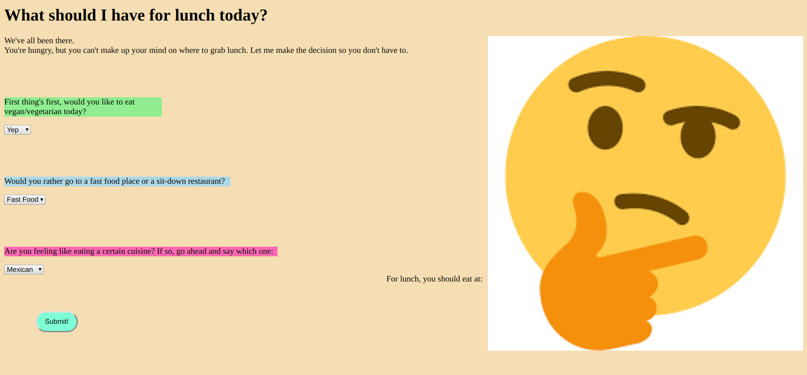
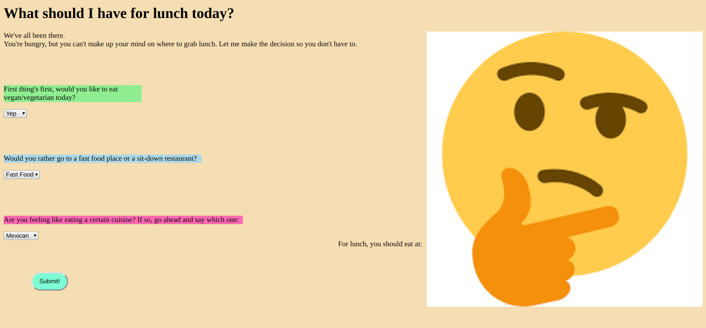
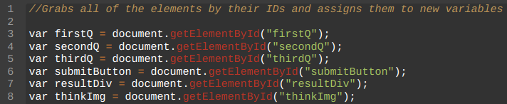
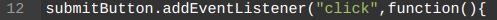
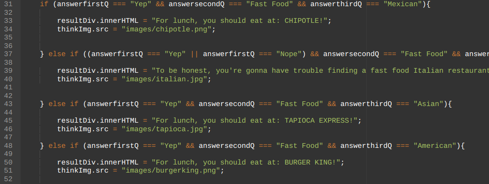

In this project, I learned how to use JavaScript, which is a scripting language that is used to create programs on webpages. For this project, we used JavaScript along with HTML/CSS to create a website that solved a problem. In my website, I chose to help out people who can't make a choice on where to eat lunch. Overall, the project works by having users select answers for three questions, and then the users hit the submit button to get results on where they should eat lunch.
 

One of the first specific pieces of code that I used was the getElementById function. This function allowed me to grab elements from my HTML file using their id and assign them to a variable in my JavaScript file.
Once I had grabbed all these elements, I proceeded to use my next function: addEventListener. Using addEventListener, I was able to make a "submit" button wait for some input (here it was a click), and then run a function once that input was heard.
Inside of this addEventListener function is where I have most of my logic. I used if/else statements along with conditionals to make a unique restaurant recommendation based on the user's answers to the questions. For every recommendation, I used .innerHTML to have the text reflect what the program recommends, and I used .src to change the image on the screen to that of the logo of the recommended restaurant.
As for the choices I had to make for this project, there really were not too many. I spent the most amount of time deciding what I wanted the possible answers the users could pick, and then finding restaurants to assign to each unique response. I also had to make the choice of how I wanted to organize my logic, and I ended up just doing it in a straightforward manner, but I think that I could have been more efficient with my logic.
This project has given me a larger appreciation for interaction. After this project, I've learned that that are endless ways for users to interact with objects, and there are all kinds of inputs that users can provide. Furthermore, there are also a ton of things that you can do with those inputs and interactions, and you can use them to create really powerful and interesting programs.

If I had more time, I would probably add more questions for the user to answer, along with more restaurant recommendations. Also, I would try to make the recommendations more accurate, and possibly even add recommendations based on the user's location.